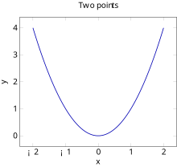

课题讲义写作规范（完整版 v1.2）
本文档是 HKDSE 课题讲义写作全流程的权威规范说明，用途：在记忆文件（MEMORY.md、meow-memory 等）被压缩、修改、丢失或跨会话时，保证讲义产出规范不丢失。本文档为唯一权威参考，与其他来源冲突时以本文档为准；记忆文件只保留指引，不再维护规范细节。 唯一例外：
%%注释工作流的通用条款以《习题册规划说明方案.md》第十章为权威，本文档第七章只登记讲义侧差异（见 7.0）。 涵盖：工作流程、项目定位与文件体系、讲义格式要求（4.1–4.9）、讲义直接撰写工作流、官方考纲对照工作流、注释排查工作流、更新日志记录、与习题册侧的接口、交付前自检清单、工具脚本与环境、修订记录、附录。各章节完成进度另见项目记忆文件，本文档不收录。
〇、目录与 Skills 索引
本文档引用的目录与 Skills 在此统一列出，正文不再重复给出完整路径。工作区内资源写相对工作区根目录的路径；工作区外资源写绝对路径。
相关目录
- 讲义正本：
DSE 课题讲义/（Chapter N 章名.md；命名规则见 3.3）
- Textbook Plan（内容大纲，无例题）：
DSE Textbook Plan/（Ch{XX} 章名.md）
- 官方考纲（唯一权威，仅作超纲判定依据，非内容来源）：
大纲/——四份课程阐释 PDF（初中数学课程阐释.pdf2020／高中数学课程阐释.pdf2021-12／高中M1数学课程阐释.pdf／高中M2数学课程阐释.pdf，均 2018-08 更新）；配套官方考纲与课题讲义关联分析.md（官方考纲详录／讲义内容线性清单／逐小节超纲对照三部分；供习题册准备使用，讲义写作阶段不参考，见第六章）与DSE 数学词汇表.md（术语与译名权威，见 4.1）
- LaTeX 教科书源文件（内容比对参考）：
C:\Users\xuless\OneDrive\文件\HKDSE\BOOK\Latex_var\DSE Textbook\（主文件VividBook.tex，各章为chapterN章名.tex）
- 习题与命题资料参考库：
AI参考习题库/（HKDSE Past Paper/历届试题分类汇编、HKDSE Mock Paper/模拟试题分类汇编），用于 5.4 题源标注与检索
- 工作空间记忆（仅进度与指引）：
.workbuddy/memory/（MEMORY.md进度；YYYY-MM-DD.md当日日志）
- 课程简介与更新日志：
DSE 课题讲义/给读者的简介 Introduction for every reader.md
- 姊妹规范（习题册侧）：
规划说明方案/习题册规划说明方案.md
用到的 Skills
obsidian-annotation-workflow：%%注释扫描、方案规划、审批执行全流程；触发词「扫描注释」「规划修改方案」「我注释了 Chapter X」。SKILL.md 位于C:\Users\xuless\.workbuddy\skills\obsidian-annotation-workflow\SKILL.md（该 skill 未必出现在运行时的 skill 清单中——DSH 侧.dsh\skills与 workbuddy 侧.workbuddy\skills为两套目录）；无法直接调用时用read读取该 SKILL.md 并按其执行。引用路径一律写绝对路径，不得写~。
workbuddy-memory：读取.workbuddy/memory/MEMORY.md与当日日志，获取项目进度与约定（规范细节仍以本文档为准）。
hkdse-math-difficulty：两侧通用——讲义侧用于小节难度上限打标（4.6），习题册侧用于题目打标。
- 习题册侧另用
hkdse-math-question-bank／hkdse-math-wording。
〇之二、规则分级
本文档条目分三级，未标级别者一律视为「红线」：
| 级别 | 含义 | 典型条目 |
|---|---|---|
| 红线 | 违反即退回重做，不得放行 | 4.5 渲染硬约束、4.7 表格内竖线、4.4 术语与定理前置、4.6 适用范围、第十章 DoD 中标「红线」的全部检项 |
| 默认 | 应遵守；偏离须在当次方案或更新日志说明理由 | em dash 破折号禁用、证明结束标记禁用、题注体例、命名与固定节写法、跨章引用写法 |
| 范本 | 仅作风格参照，不构成义务 | 各章具体段落写法、4.4 所列范例与既有章节先例 |
强制项的历史违规存量不静默放行，一律登记进第十章末「历史存量」清单，分批清理并在更新日志记条。
〇之三、防漂移条款
- 本文件为讲义规范的唯一权威。记忆系统（meow-memory）与
MEMORY.md中若出现规范细节条款，须迁回本文件、记忆中只留指向；二者与本文件不一致时以本文件为准，并即时修正记忆。
- 规范文件之间只登记差异，不复制内容：注释工作流通用条款以《习题册规划说明方案.md》第十章为权威（见 7.0）；考纲结论与超纲判定以
大纲/官方考纲与课题讲义关联分析.md为准（见 6.1、6.4）。
- 用户注释中的全局性意图必须回写本文件（见 7.1 第 2 步），不得只改单处正文。
- 每次修订本文件，须在第十二章补一条修订记录，并写明同步改写了哪些章节。
一、大致工作流程
分两条路径：A 新章上线、B 旧章修订，共用同一收尾闭环。
A 新章上线
- 撰写正文：依据
DSE Textbook Plan/与 LaTeX 源文件直接撰写DSE 课题讲义/Chapter N 章名.md（不设详细规划层，见 5.0），遵循第四章全部格式规范；
- 成稿后一次性落难度行：为每个教学节标注「本节难度上限」四维评分，不边写边估（见 4.6）；
- 自检：过第十章「交付前自检清单」，红线项全部通过；
- 提交用户审阅：对象为讲义正文本身（含难度行、图、词汇表），不是独立规划文件；
- 按
%%注释修改（如有）：走第七章流程，执行后回到第 2 步同批重评该节上限并重跑第 3 步；
- 更新官方考纲对照：按第六章把本章同步进对照文件（逐小节全覆盖）；
- 更新日志收尾：按第八章记录；上线状态变化时同步更新「给读者的简介」的已上线范围与目录状态标记。
B 旧章修订
从第 5 步进入；第 2、3、6、7 步必做，第 1 步视修订范围而定。Textbook Plan 按约定不动（现行惯例：讲义修订不回写 Plan；仅当 Plan 层面需增删节时才改，改动前须征求用户同意）。
共同收尾要求：第 7 步后确认 DSE 课题讲义/ 内 %% 零残留；记忆系统与本文件冲突时以本文件为准（见 〇之三）。
二、沟通与语言
- 尽量多用提问工具让用户参与决策。必须提问：内容取舍（超纲与增润内容去留）、结构性调整（分节合并、删除板块）、两源数学表述冲突且正确性无法自行判定、难度上限需变更。不必逐一询问：纯格式归并、错别字与标点、规范已有明文规定的常规落实。
- 交付给学生的产物：讲义正文用简体中文，关键术语中英双语，正式、面向初高中学生的教学语言；习题册侧产物用繁体中文（见姊妹文档）。
- 文档内的固定文案与状态标记（板块标题标签词、
✅ 已執行（YYYY-MM-DD）、超纲标签、目录状态标记）统一繁体，不得同义改写。
- 规范与规划文件的说明性文字（本文件各章的叙述段落）用简体中文，客观简洁。
三、项目定位与文件体系
3.1 三层文件定位
| 层 | 目录 | 内容 | 用途 |
|---|---|---|---|
| DSE Textbook（LaTeX） | 文件\HKDSE\BOOK\Latex_var\DSE Textbook\ |
完整教科书（繁体中文） | 学生自学；详尽解释、大量例题习题 |
| DSE Textbook Plan（Markdown） | DSE Textbook Plan/ |
定义-定理大纲，无例题 | 教科书草稿的简要汇总 |
| DSE 课题讲义（Markdown） | DSE 课题讲义/ |
正式授课讲义，每个核心概念配 1–2 个示例 | 面向课堂学生 |
流程：DSE Textbook Plan → 正式讲义（用户直接在正文内以 %% 注释提出修改）。详细规划层的取消说明以 5.0 为唯一出处。
3.2 讲义 ↔ LaTeX 源文件对应
tex 源文件命名 chapterN章名.tex。常见映射：Ch00→chapter0基础概念.tex、Ch01→chapter1数的概念.tex、Ch02→chapter2估算.tex、Ch03→chapter3整数指数率.tex、Ch04→chapter4多项式(I).tex、Ch05→chapter5解方程方法(I).tex、Ch16→chapter16集合论.tex；其余按 chapterN 类推（部分编号错位，如 Ch19 函数对应 chapter20函数及其图像.tex）。
名实差处理原则：tex 源章名与讲义章名可能不一致（如讲义 Chapter 1 数系(I).md 对应源文件 chapter1数的概念.tex），此类差异一律以讲义正本文件名为准，引用与日志都写讲义文件名；比对内容时按上表定位 tex 文件，不要求三者名称一致。
3.3 文件与标题命名
- 讲义文件名：
Chapter N 章名 (Roman).md。N不补零（Chapter 0、Chapter 27）；罗马数字前留一个半角空格、用半角括号（Chapter 15 解析几何 (I).md）。
- 历史文件不批量重命名：现存 4 种变体（
数系(I)、立体几何 (I)、数列（I）、多项式 (II)）保留原名，因重命名会破坏跨 28 章的 Obsidian 内链与记忆检索；跨章引用一律按实际文件名书写内链（见 4.8）。新建章节必须合本条规定。
- 标题层级与编号对应（红线）：H1
# N 章名 (Roman)（English Name）、H2## N.M 节名（English Name）、H3### N.M.K 子节名（English Name）；XX.X 级必须用##，XX.X.Y 级必须用###，不得错置（错置会造成 4.6 漏标）。编号与标题之间用全角空格U+3000。
- 章首固定结构：H1 → 章首引入段（
>引用块，写本章主线与动机）→前置：行（用内链枚举依赖章，见 4.8）→---→ 各节。
- 文末固定节：
## 中英对照词汇表（Glossary）（必写，模板见 4.1 第 5 条）、（教师向）## 备课提示（Teaching Notes）、（有未处理注释时）## 注释修改方案。备课提示定位为教师向内容：不受「面向课堂学生」限制，但不得引入未定义术语；其变更不写入「给读者的简介」更新日志。
四、讲义格式要求（强制）
4.1 总体要求
- 简体中文，关键术语双语；文件头部 YAML 含
tags: DSE课程笔记；文末中英对照词汇表。
- 内容来源：基于 LaTeX 项目 + Textbook Plan 书写，优先参考 LaTeX → Plan；两源缺漏差异取并集，数学表述冲突不取并集、以数学正确性为准，无法自行判定则用提问工具交用户裁定，并在正文留
%%备忘待处理（注释工作流见第七章）。
- 用 Obsidian Admonition 自定义环境包裹数学板块（环境全集与语义见 4.2）；不得用原生 Callout（
> [!note]、> [!warning]等）承载教学内容。
例外：>用于备注/背景引入，可出现在 ad- 块内部作补充；图题注一律写成>引用块（见 4.5 第 10 条），此为>的第二种合法用途。> **本节难度上限**是固定元数据行，不属本条范畴，位置与格式由 4.6 规定。
- 文末中英对照词汇表模板：标题固定
## 中英对照词汇表（Glossary）；四列「中文术语 ｜ 英文 ｜ 符号或简写 ｜ 备注」；条目按正文出现顺序排列，不设分节小标题；无符号项符号列留空，不得用破折号占位。（现存 6 种标题变体，修订该章时顺带归并，历史文件不专门开批。）
- 术语与译名依据：以
大纲/DSE 数学词汇表.md为准；两岸用词差异按 DSE 习惯优先；正文不得残留繁体字（固定文案与繁体状态标记除外，见第二章）。
4.2 Admonition 环境映射（权威对照表）
代码块语法 ad-<类型> （多行块须用四反引号围栏）。环境全集以下表为准，表外环境不得新增；title: 的中文标签与英文标签必须逐字使用本表规定用词。
| 环境 | title: 中文标签 |
英文标签 | 用途 | 状态 |
|---|---|---|---|---|
ad-def |
定义 | Definition | 概念的定义 | 启用 |
ad-thm |
定理 | Theorem | 需证明的主要结论 | 启用 |
ad-cor |
推论 | Corollary | 由定理直接得出 | 启用 |
ad-lem |
引理 | Lemma | 被多次独立引用的前置结论 | 启用 |
ad-proof |
证明 | Proof | 上一板块的证明 | 启用 |
ad-axi |
公理 | Axiom | 不加证明的基本假设；不要求配 ad-proof |
启用 |
ad-example |
示例 | Example | 例题与完整解答 | 启用 |
ad-alg |
算法 | Algorithm | 分步骤计算流程（因式分解法、配方法、通解法等） | 启用 |
ad-note |
注记 | Note | 定义的补充说明、视角提示、易错提醒 | 启用 |
ad-warning |
警告 | Warning | 易错点、失效条件、增根警告 | 启用 |
ad-hyp |
假设 | Hypothesis | 暂不启用（现行各章 0 次使用） | 停用 |
ad-tip |
提示 | Tip | 不属本表原枚举；既有 1 处改并 ad-note |
停用 |
ad-sol |
解答 | Solution | 保留位，不使用（解答写进 ad-example 内） |
停用 |
ad-proposition |
命题 | Proposition | 不使用 | 禁用 |
- 结论类型只用「定义／定理／推论／引理」四种，不用「命题（Proposition）」；前置结论用定理还是引理，按「是否被多次独立引用」判断。
- 「示例」是板块标签词（固定用于
ad-example的title:）；「例题」只用于节拍名称与叙述语境，〔例题〕节拍的落地标签固定为「示例｜Example」。
- 嵌套展示引用原文时，外层比内层多一对反引号（见 4.4 与附录 A）。
4.3 标题格式
title: 环境名（名称） | 英文环境名（英文名称）。
- 无名称时省略括号；中文部分只写中文，英文部分只写英文（禁止在中文括号内夹英文，如
注记（Remark，…）属违规写法）。
- 中英文两部分均用全角括号
（）；括号内部的标点、数字、数学符号用半角；英文部分内不出现中文，中文部分内不出现英文单词（$…$数学式不限）。
- 中英之间固定用「空格 ＋ 半角竖线 ＋ 空格」分隔；
title:冒号后一个半角空格。
- 标题若误写在正文首行加粗处，上提到
title:并删去正文加粗。
title: 定理（根与因式分解） | Theorem（Roots and Factorization）
……4.4 行文与排版规范
本节条目分两类：文本用语规范（4.4.1 正文、4.4.2 各 Admonition 环境）与数学符号规范（4.4.3）；4.4.4 为只对所列章节生效的特别约定。未标级别者按 〇之二 视为红线。
4.4.1 文本用语规范｜正文
- 破折号禁用（默认级）：不得用 em dash（
—、——）作句内衔接或插入语标记，改用「是」「即」「，」「：」或分句；title:与图题注中的连接号同禁。允许：en dash–作数值与区间连接号、章节范围记号；叙述中的范围优先写「至」。
- 写作风格：面向初高中学生，措辞简洁干练不拖泥带水；章节过渡自然，避免生硬标签式标题。
- 反布尔巴基风格：避免「定义、定理、算法」的生硬堆砌；板块之间要有平滑过渡的衔接句与接地气的引入，以阅读为导向组织推导，深入浅出、从直观到抽象。引入机械化算法（如通解法）前必须先完整推导其核心步骤与原理。
- 概念本质先行、符号先于文字：新概念所依托的逻辑本质若已在前文定义，须在该节开头先回顾该本质，再由前文公理或定义引出对象的符号形式（集合建构式、映射记号），最后才用文字复述；不得以纯文字叙述代替符号定义。记号缩写一律在其所缩写的对象之后引入，并说明该记号不增添新含义。
- 术语与定理前置：术语必须前文已定义，引用的定理必须经过证明。「前文」的定义：本册已上线章节中该节之前的内容，以及该章
前置：行所列章节的内容。官方考纲默认初中已学的既定事实（如分数运算、勾股定理）可直接使用，但须以「前文所学」等自然语汇衔接，不注编号。公理与定义为体系起点，不适用「必须经过证明」；其余任何结论板块（定理／推论／引理）必须配ad-proof，或作为推论被前文已证明结论直接引用。
- 超纲内容正文标注：按既有用户决策保留的定理证明与形式化内容，须在正文用「增润／扩展阅读」「M1/M2 选修预铺垫」「本节内容 DSE 常规课程不作要求」等注记标注（范本：Ch26 弧度法、Ch18／Ch5 高斯消元自标
*）。写作阶段用自然语言标注即可，不必先查官方编号或对照文件（官方依据由第六章对照阶段补齐，见 6.5）。自标只写自然语言，不得在正文写考试卷别、纸部归属、官方单位号或「非基础课题」等考纲术语；此类归属只登记在大纲/官方考纲与课题讲义关联分析.md与章末备课提示（教师向）里。
- 超纲自标的落点：自标写在被标注板块之前的正文过渡句或板块首句；不得在
ad-proof末尾以括号补写面向教师的教学性说明，同一证明不重复标注。
- 读者视角与措辞禁区（默认级）：讲义正文面向课堂学生（权威见二章「交付给学生的产物」与 3.1 表），不得出现编者向／教师向／应试向的自指：如「交给学生」「本册」「本讲义」「补课」「要补的是……」「答卷上」「失分」「得分」「考点」等；教师向说明只准住
## 备课提示（Teaching Notes）。补课与超纲的交代只写自然语言。判定口径：正文行内命中上述词表即违例；同一意思若属教学安排说明，移入备课提示。
- 章节标题与计数的一致性（默认级）：节标题、一览表标题、正文与小结里的计数词与枚举措辞（「五种基本轨迹」「三种方法」「四类」）须与该节最终内容同步；内容增删后，标题、表格行数、过渡句、板块集合符号编号（
- 跨章引用写法（默认级）：跨章引用一律具名，首次提及用 Obsidian 内链
[[Chapter N 章名|显示名]]（按实际文件名），其后可用简称；指涉具体位置写节号§N.M(.K)。「上一章」仅限编号紧邻的前一章且语境明确时使用，不得作泛指。语法细则见 4.8。
- 正文段落感（默认级）：连续叙述以「一段一义」组织——一个自然段只承载一个论点（一个对象、一层意思或一步推理），新论点即另起一段，不得把多个论点挤进同一段形成文字墙；凡并列展开的三个及以上同类项（多条情形、多项性质、有先后的多条操作），一律改用列表（有先后用有序列表，纯并列用无序列表），不得连缀为「甲……；乙……；丙……」式长句。判定口径：正文段落超四行源文本未分行，或三个及以上同类并列项未成列表，即属违例。证明板块内的分行口径依 4.4.2（三）「证明板块叙述分行成段」执行；非证明板块内的同类整理见 4.4.2（一）「板块内段落感与列表化」，本条不重复约束。
4.4.2 文本用语规范｜各 Admonition 环境
（一）板块通用（结构、标题与编号）
- 编号与定位：定理、定义、引理等板块标题不带任何编号（禁止「定理 1.2.6」式命名与引用）。需要指涉前文结论时指涉其所在节号
§N.M(.K)；同节内多个同类板块用描述性指称（「上面的引理」「关于
- 证明与定理并列，不可嵌套：
ad-proof与ad-thm同级另起；引用前文定理时因去除了编号，不能写「根据定理 1.2.6」，应在 proof 内抄写被引用命题内容；可用嵌套 Admonition（外层比内层多一对反引号）展示引用原文。
- 板块衔接：插入新板块时前后要有文本衔接（过渡句），不能生硬堆砌；引理组之间也要有「由此推出…」承接句。
- 板块内段落感与列表化（默认级）：非证明板块（定义、定理、推论、引理、注记、警告、算法、示例）内的连续叙述同样一段一义：设定复述、结论公式、图示锚句、读法与边界说明各归各段（或各归各位），不得挤作一团；一块之内定义多个概念或陈述多条并列结论时，每个概念（结论）自成一段或以列表分列；示例的解答按题面编号分段，每小问内一层意思一段，配图紧跟该小问的锚句之后。判定口径：板块内段落超四行源文本未分行、多概念或多结论连缀成段未分段未列表，即属违例；定义块内部细则从（二）「定义内部的排版」、证明块分行口径从（三）「叙述分行成段」，本条不重复约束。
（二）定义与结论板块（ad-def／ad-thm／ad-cor／ad-lem）
- 定义的后置条件（良定义性，默认级）：凡以「若干条线的交点」「满足某性质的对象」为某物下定义者，必须先证明该对象存在且唯一（或说明其由已证定理保证），再行命名；定义句不得预设尚未证明的共点性、唯一性或存在性。板块次序据此排定：共点定理＋证明在前，定义在后，定义首句以「由上面的定理，……交于一点。这个交点称为…」起笔。相应地，共点定理的陈述图与证明图的题注不得提前使用尚未定义的心名。
- 定义的完备性：某一新建立的视角（轨迹、逻辑、坐标等）若能把前文靠直观、靠作图动作或靠反向描述（由方程认图形）处理的对象改写为精确定义，须在体系自然闭合处补一次定义，并写明前文出处的分工（直观层／符号层／新视角层），不得以「前文已定义」含糊带过。三条边界：
- ①只补到「条件可检验」为止，不推翻前文列为原始概念者；
- ②补课内容不得另设考点、新增题型，须自标「不新增考试要求」；
- ③前文未定义即在用的术语（如「垂直」）应在首次使用之前补定义。用新概念引进的已知对象一律用定义环境当场定义、不放注记；非定义必备的派生性质下移注记。补定义必须用该章的核心语言说透，不能只给一种记号：轨迹章的定义须逐条写成「动点
- 定义内部的排版：一个定义板块若同时给出多个概念（如线段／射线／直线、圆／内部／圆盘、半平面／闭半平面／同侧／异侧），每个概念自成一段（一段一义），并列者用列表或加粗条目分开，不得把条件、集合式、坐标式、图引用与旁注挤在同一段里；新引入的判据、条件式与关系式一律用行间公式单独展示，行内只留提及与简单记号。判定口径：定义板块内出现「甲：……；乙：……；丙：……」式长串并列叙述，或关键等式／不等式仅以行内形式出现，即属违规。
- 定义环境只写定义（默认级）：
ad-def块内只放定义本身——概念句、符号式与必要配图；存在性与唯一性条件直接写进定义句（如「ad-note或上下文承担。同一块内定义多个概念时，每个概念各配一幅图、各置其所属锚句正下方，不得在块末堆一幅合并图。判定口径：ad-def块内出现分情形推导、存在条件式或与命名无关的警示文，或定义式在边界情形（如直线与坐标轴重合）导出矛盾，即属违例。
- 定义层的落点：一节的讲解任务由它承担的语言层决定。若某章的主线是「用某套语言处理对象」（轨迹章即「用方程描述轨迹」），则该语言的定义（方程的定义域、解集、图形，轨迹的方程等）必须住在建立该语言的节内，不得寄居在方法节、流程节或示例节里回头补说。判定口径：任一节若需先解释一个术语才能往下讲，而该解释与本节的「做法」无关，即说明这条定义落错了节。重排时优先在节末新增子节承载定义（
###号顺延），既有节号一律不重编；###节可改名，但须同步《官方考纲与课题讲义关联分析》第三部分的行标题与全库按名引用。
- 定义与判据的重复处置（默认级）：①某「定理」的结论若与其近旁的一条定义只是同一条件的两种写法（如「到定点等距的轨迹是圆」之于圆的定义），不得为凑板块数而保留定理块与形式化证明；改为加粗即时说明给出集合式，并明说「条件与定义同式，完备性与纯粹性合成一次对读，无须另立定理再证」。②某结论若用坐标算比综合几何证明更短、又属官方要求的内容，则几何层陈述留在描述章（保留结论与集合式、注明依据），代数层定理与证明留在方程章，两处互相回指；不得因删去几何证明而丢掉官方考点。③几何语言说不严谨的位置关系（如两平行线的「位于正中间」），应改由该轨迹或方程自身定义，并把它在方程层的精确含义落成代数定理。判定口径：凡「定理
- 定义的唯一性（不重复定义，用回指；默认级）：同一概念在全库只定义一次。后章若需要该概念的语言（方程、解集、图形、条件的代数式），只在正文里回指原节号并就地给出读法，不得另立
ad-def块重下一遍定义，也不得把同一条件换个写法当成新对象；只有原定义不敷使用（缺判据、缺该章核心语言）时才按「定义的完备性」补定义，且补课节须自标不新增考点。判定口径：凡本册已在前章定义过的概念，本批次新写入或改写的行里若出现ad-def重述，即属违例。
- 定理陈述的形式（默认级）：定理（含定义、推论、引理等结论板块）的陈述须凝为
前 提 结 论 Chapter 0 基础概念§0.1.6 定义（定理）与 §0.1.3、§0.5）；双向结论须用ad-proof。判定口径：结论板块的陈述通篇为散文而无
（三）证明板块（ad-proof）
- 证明板块叙述分行成段（默认级）：凡
ad-proof板块内的连续叙述，每一个句子另起一行；其中逻辑关系紧扣的相邻句用软换行（两行之间不留空行，仍属同一段——典型是「故／于是／从而／因此／所以／即／得／同理／又／而／两式／消去／代入／整理／化简／两边／两端／展开／移项／解得」这类承接句与其前提句），其余句子之间隔一个空行分段。- 断句点取句末标点（
。、；、？、！），$…$、$$…$$与\text{…}内部不作断点；$$…$$公式行前后各留一个空行；段首粗体标签不计为一句（**存在性。** 设 …、**情形 1：…** 线段 …允许标签与首句同行）。
- 本条只约束
ad-proof：定义、定理、推论、注记、示例解答与板块间正文过渡句一律用常规写法（整段成行、不逐句断行，也不用行尾双空格硬换行）。
- 判定口径：
ad-proof内一行在扣除段首粗体标签后仍含 ≥2 个句末标点即违规；非ad-proof板块内出现逐句断行或行尾硬换行空格，同样视为违规。
- 断句点取句末标点（
- 证明结束不得添加结束标记（默认级）：
$\square$、「证毕」、「得证」、「证明完毕」一律禁止；✓用作证明结束标记时同禁。多方向证明以「两个方向合并，故✓的合法用途保留：示例解答中「验证：… ✓」的打勾核对、表格勾选列（如奇偶性表、判定表）的是／非标记，均不属违规。
- 证明的自足性：
ad-proof板块开头须把本定理所用的全部条件重新假设一遍——圆与半径、动点与定点、记号（如ad-proof首行出现的点、线、记号未在本行或紧邻上文声明过，即属违例。
- 计算前先说目的（默认级）：
ad-proof内的预备公式或展开链出现之前，须先用一句话交代这一步算的是什么量、接着要用它做什么（如「三个距离是根式，把三个等式全部平方后逐个验证以消去根号」），不得先无动机地预置一串恒等式、到使用处才回头交代；证明路线优先选直接归约目标结论的一条（如把判据的析取式逐个平方验证），而不是先囤积引理再组装。判定口径：证明中某个公式块若回答不出「它为结论的哪一步服务」，或目的句出现在公式之后，即属违例。
- 等价链即双向证明（默认级）：双向结论（
ad-proof内已出现以结论为一端、以待证式为另一端、全程用
- 反证与同一法的书写体例：反证须起手写明待否证的命题与唯一的假设，导出矛盾时点名所冲突的两条陈述（写「
（四）示例板块（ad-example）
- 示例格式：提问与回答之间用
---分隔，回答另起；解答项编号对应题目编号。
- 示例的通用性（默认级）：同一方法的首个示例须展示该方法的一般技巧，不得只用退化的巧合数据蒙混过关（如「定义法求垂直平分线」取一对关于原点对称的定点，答案退化为
4.4.3 数学符号规范
- 命题记法：
P(变量) = (内容)表示法。
- 恒等号：三恒等式（平方和、商数、互余）及其恒等变形（通分/约分/完全平方展开/合并同类项/同乘除非零量）用
≡；代入数值/特殊角求值、解方程、具体三角形定义代入用=（互余关系亦作恒等式用≡；移项属解方程语境，用=，不列入恒等变形清单）。
- 角度符号：几何角首次出现且可能混淆时用完整三字母（
- 平面记号（默认级）：平面一律用英文中无对应字母的大写希腊字母记作：两平面固定
- 线段长与线段（默认级）：两点
- 派生对象用撇号区分，不得以参数记号造新对象：同一图形／证明中多个同族对象（点、直线、圆、向量、区域）用
- 符号与排版的分工：本条只管符号用法；分数、单位、数值区间连接号、表格内绝对值写法、逻辑符号与数学公式块的多行排版等排版细则见 4.7。
4.4.4 章节特别约定（随章节生效，不泛化）
- Ch16 集合论：集合符号
- Ch26 三角函数编排：DSE 常规课无弧度制，主线用角度制（自变量以度计，周期
- Ch26 诱导公式：
- ①诱导公式按主轴拆为四组独立定理（
- ②「符号看象限」须说清：符号由变换前的三角函数在变换后角所在象限的正负决定（如
- ③最小正周期用 Ch0 反证法证明（代入
- ①诱导公式按主轴拆为四组独立定理（
- 反函数术语禁用：全册（Ch19）未正式介绍「反函数」概念，故涉及反三角／逆运算的章节不得使用「反函数」术语，改用「逆变换」，写法对齐 Ch25 对数引入：由严格单调性保证「从函数值唯一找回自变量」，定义用双向写法（
4.5 TikZ 插图规范（TikzJax 渲染）
代码块以 tikz 标识。参考 https://github.com/artisticat1/obsidian-tikzjax
渲染硬约束（红线，违反将无法渲染）
- 必须用
\begin{document}…\end{document}包裹正文；
- 不可写
\documentclass{standalone}（文档类由插件隐式提供）；
- 不可写
\usepackage{tikz}（已默认加载）；
\usepackage{}与\pgfplotsset{}写在\begin{document}之前；
- 中文只可出现在注释中（
%开头）；title、node、label、legend 等 TikZ 命令参数中禁止中文，图内只放英文、拼音、数学符号；图内标签须与正文数学记号逐字对应，不得另造缩写，中文说明一律写进题注（见第 10 条）。
风格与兼容约定（默认级）
- 宏包白名单（非示例清单）：chemfig、tikz-cd、circuitikz、pgfplots、array、amsmath、amstext、amsfonts、amssymb、tikz-3dplot；新增宏包须先在本插件下实测渲染通过并补入白名单方可使用；
- pgfplots：
\usepackage{pgfplots}+\pgfplotsset{compat=1.16}（既有各章统一值）；不得使用 1.17 及以上；
- 优先不使用
\usetikzlibrary{}（插件不保证支持），箭头、虚线等仅用内置键（->、<->、dashed）；已验证例外：arrows.meta（Ch8 三处箭头图在用，compat=1.15），每次涉及须目视复核渲染；
- 图号：图号
图 N-K（N 章号，K 该章内顺序整数）；同一图并列分幅用大写字母后缀（分幅为并列，非替换），一章内同一图号的分幅以 A／B／C 为限，第四幅起另起整数号。
- 题注一律写成 Obsidian 引用块：格式
> 图 N-K：<中文说明>。（>后一个半角空格），为图下方独立一行、不加粗；解释与编号行同属一个引用块，每句独占一行，两句间以只含>的空引用行分隔；在列表项内时先按列表缩进再写>；行尾不加双空格。正文首次引用写「如图 N-K 所示」。（现存裸行与加粗式题注在修订该章时归并，见 L14。）
- 渲染验证：任何含 TikZ 改动的交付，须在启用 TikzJax 的库中实际目视验证；验证入口可用
测验草稿/tikzjax_test.md（见 11 章）。
- 配图判定（讲义侧，默认级）：板块内容属下列之一者须配图，图内只放数学符号与英文：
- ①以坐标关系陈述几何位置（如数线解集、半平面、可行区域）；
- ②分步骤的作图或求解算法（每一到两步一幅分幅图，后缀 A/B/C…）；
- ③论证依赖「取点比较」的定理或证明（所取的点画进图，各点判断结果先写入正文，题注只复述读图位置）。图由正文或板块首句以「如图 N-K 所示」引出。
- 配图嵌放位置（讲义侧，默认级）：
- 配图须置于其所说明内容所在的板块内部、紧跟引出它的那句话或那一步之后；嵌套时外层 ad 围栏比内层多一对反引号（外 4／内 3），题注随行同置块内（体例见第 10 条）。
- 引用句若为列表项，图紧跟该列表项之后；
- 定理演示图贴定理陈述，证明步骤图贴对应步骤，示例配图贴对应问的解答。**
- 判定口径（可脚本化）：取题注块之前最近的非空正文行为锚句（即「如图 N-K 所示」引用句），须只含本图号**——含两个及以上图号即「合并锚句」违规（每幅图／分幅之前须各有只提该图号的锚句，分幅家族不得连排），不含本图号即「锚句未提本图」违规；
- 锚句与图之间只容许一个空行与紧随其后的公式显示（
$$…$$），行距超过 4 行、图落在引用句之前、图堆到板块末尾或浮在板块之外均属违规。相邻两幅图间无点名后图的概念句即判「扎堆」，只在图前补指针句不算整改，图须搬到所属概念句之下；
- 搬图须整单元搬（图块连题注块一起，避免孤儿题注）。
- 统一放大、填充透明度与逐步骤配图（默认级）：几何类配图默认
\begin{tikzpicture}[scale=1.5]；阴影填充一律「纯色 +opacity=0.18」，不得用blue!12一类不透明淡色；证明中每一到两个推理步骤配一幅分幅图（同一步骤族同一整数图号加 A/B/C 后缀），纯代数代换型证明亦不豁免；既有各章自带xscale／yscale的图不自动套用，须逐幅复核。
- 结论板块自带陈述配图（讲义侧，默认级）：几何类章的
ad-thm／ad-cor／ad-lem板块，陈述本身须配一幅体现该结论的图（不得只以证明图或邻近定义图代用）；全等／相似三角形、对应边角、等长线段等「对应关系型」图形须用同色标出对应元素。判定：逐个结论板块检查内部是否含 ```tikz 块，无则欠配图。
- 题注不得引入新信息（讲义侧，默认级）：题注只说明「图中画了什么、各元素是谁」，不得携带正文没有的推理环节或结论；第 12 条③类判断结果先写入正文，题注仅作读图索引。
- 图内线型层级、标记贴附与元素必要性（讲义侧，默认级）：
- ①指代弧的彩色粗弧必须画在圆周上（半径与被指代的圆相同），不得内缩成同心细弧；
- ②主图形用粗实线，圆／外接圆按「已作出为实线、待证或待作对象为虚线」区分，辅助线与延长线用虚线；
- ③被标注的点、线、角须在正文或题注有身份交代，正文未用到的圆心等元素一律删去；
- ④点标签不得与线条重合，同一条边不得重复
draw；
- ⑤直角小方块的边须严格平行于该直角的两边（用顶点两射线的单位向量实算，禁止凭感觉写
++(dx,dy)）；
- ⑥角楔等填充一律「纯色 +
opacity=0.18」。圆锥曲线配图必须用plot画出曲线本体，禁止以circle代圆锥曲线；块内不得留下未使用的\coordinate。判定口径：题注出现抛物线／椭圆／双曲线或plot语句，即判错图（编译通过不能免此检）。
- 图不得越权（讲义侧，默认级）：定义与引入处的配图不得标出该处尚未证明的等量或倍数关系，只指认对象；数量关系留到定理及其配图。定义中提到「另一类情形」（如优弧取反角）须有对应分幅图，不得只以文字带过。
- 一图一事（讲义侧，默认级）：同一板块并列陈述两种情形者（如「同侧」与「异侧」），每种情形各配一幅分幅图，不得叠进同一幅图；分幅后缀仍受 A／B／C 三幅之限。图内每个点、线、角都须在正文或题注有身份交代（与第 17 条③同向：无身份的元素删去，缺身份的补写）。
正确示例（pgfplots）：

查看 TikZ 原始碼
\usepackage{pgfplots}
\pgfplotsset{compat=1.16}
\begin{document}
\begin{tikzpicture}
\begin{axis}[xlabel={$x$}, ylabel={$y$}, title={Two points}]
\addplot[domain=-2:2, samples=80, blue!70!black, thick] {x^2};
\end{axis}
\end{tikzpicture}
\end{document}4.6 节难度上限评分（强制）
每个教学节须标注本节难度上限，以配合习题册命题流程。
- 教学节的定义：编号为
N.M（XX.X 级）且承担新知识传授的节，含标*或名含「延伸／拓展」的节（如 5.6 高斯消元、18.5 三元方程组矩阵解法），须正常标注。
- 粒度与层级（红线）：标注对象是编号层级
N.M，与标题层级一一对应：XX.X 级必须用##，XX.X.Y 级必须用###，不得错置；不一致属结构错误，先修正层级再补标注。
- 不标注清单：判定式「不含新定义、新定理或新方法的节一律不标」。已知类别（关键词匹配）：章末总结／本章总结／本章小结／小结（Summary）／总结／方法总表；中英对照词汇表与词汇表；备课提示（Teaching Notes）；注释修改方案（含
✅ 已執行行）；章首引入段。
- 适用范围（红线）：
- ①习题册「各章小节」部分涉及该节的题目，四维难度逐维不得超过本节对应维度上限（该部分另须满足上确界要求：最高不突破且至少一题触顶，见《习题册规划说明方案.md》7.7）**；
- ②综合练习与理论习题不受本上限约束；
- ③讲义侧只负责给出上限，不承担触顶义务。
- 评分维度与字母符号：与习题册一致，四维独立、不合成总分：
T思维量 ｜C计算量 ｜E探索性 ｜Q跨课题；每维 D/C/B/A 带 ±，共 12 档（判定定义与判据速查见hkdse-math-difficultyskill）。
- 放置位置与格式：节标题（
##）正下方、正文之前，一行备注：
> **本节难度上限**：T B- ｜ C C ｜ E C ｜ Q D- 档位书写文法：①
<档>为D／C／B／A加可选后缀+或-（如B-、C+）；②维度字母与档位间一个半角空格；③维度间用「全角竖线加空格」分隔；④不得改用列表或表格。注意C维与C档同字母：C C读作「计算量为 C 档」。
- 评分语义：本节内容可支撑的题目难度上限——T 取本节最长推理链／最深推理负担；C 取本节最复杂运算形态；E 取本节自主探究成分（新概念迁移、需自行证明的性质）；Q 取本节知识可参与的跨课题／跨板块联动广度。
- 多子节合并取法：逐维取该节全部子节中该维的最高档，不要求四维来自同一子节；不取平均、不做任何合成。
- 只标档位，不附判定理由；打标依据（判例／判据编号）写入修改方案或更新日志；无处可载时可用临时
%%注释，交付前必须清除（见第十章 DoD）。
- 打标流程：读节全文（含子节）→ 按四维等级定义定主体级 → 按判据速查表调 ±（调用
hkdse-math-difficultyskill）→ 与本章相邻节做相对校准。
- 更新时机：整节成稿后一次性定档落行（见一章第 2 步）；内容变更时同批重评。
- 冲突仲裁（红线）：①讲义内容变更 → 同批重评上限；②习题册题目实际需要超出上限 → 停止命题，用提问工具报告，由用户裁定：升该节内容、降题目、或改列综合练习；③不得静默修改任一侧。
- 与习题册侧的联动：上限档位变动须在更新日志记出，并提示姊妹侧同步 7.6 难度统计表与 7.7 对照表（见 9.1）。
4.7 数学排版细则
- 表格内绝对值与范数一律写
\lvert … \rvert（红线）：裸竖线会切断 Obsidian 表格，\|在 KaTeX 下渲染成双竖线。例：$\lvert k\rvert>1$。适用讲义、习题册、对照文件的一切表格。本条只管辖仍保留绝对值写法者（实数绝对值与向量模）；两点距离与线段长已不再用绝对值，见 4.4.3「线段长与线段」。
- 分数用
\dfrac；角度写90^\circ，范围写$0^\circ \le \theta < 360^\circ$。
- 单位写
\text{cm}、\text{km/h}，数值与单位间用\,分隔；大额数值用科学记数法（与 Ch3 一致），不写千分位逗号。
- 逻辑符号统一
\iff、\implies；不等号统一\ne、\le、\ge。
- 共轭写
\overline{z}；数集写\mathbb{R}、\mathbb{C}；区间优先用不等号表达，(a,b)仅作坐标使用，需表示开区间时注明。
- 数值区间的连接号用
–：统计组限与组界、分数段等写为$10$–$19$、$2.5$–$3.4$一类（以 Ch12、Ch13 现行为准）；该记号不受 4.4 破折号禁令约束。
- 模与
- 中文与公式之间不额外加空格（由渲染器处理）。
- 数学公式块的多行排版（默认级）：
- ①变形链（展开、移项、通分、约分、代入、蕴含、等价改写）一律写成
$$\begin{aligned} … \end{aligned}$$并一步一行（\\换行、&对齐在关系符之前），不得挤在一行；
- ②散文里的「移项得……」一类叙述应落进公式块，正文只留一句交代变形依据（等价变形／恒等变形）；
- ③并列的多条同型公式（如四个赋值、两条直线的方程、三种情形各一式）逐条一行，不用
\qquad或\quad（含以\text{或}／\text{且}连接）串成一行；散文内联的并列同型公式（「写出来是aligned公式块逐条一行；叙述中顺带的简短代入（如「则
- ④例外：定理／推论／定义的陈述仍按 4.4「定理陈述的形式」写成单一行间式，不拆行；两步以内短链可留单行。判定口径：单行
$$…$$内出现 4 个以上关系符（=／\iff／\implies／\equiv），或以\qquad／\quad并列两条以上同型公式，或散文以顿号、「或」并列两条以上作为该步重点的同型公式者，即属违规。
- ①变形链（展开、移项、通分、约分、代入、蕴含、等价改写）一律写成
4.8 交叉引用规范
| 指涉对象 | 写法 | 例 |
|---|---|---|
| 讲义小节 | §N.M／§N.M.K（跨章也写全） |
见 §26.2.6 |
| 其他章（首次提及） | [[Chapter N 章名|显示名]]，按实际文件名 |
[[Chapter 25 指数函数与对数函数|指数函数与对数函数]] |
| 板块（定理／定义等） | 不具编号，用节号 + 描述性指称 | 「§16.7 的确界存在性定理」 |
| 插图 | 图 N-K（分幅加后缀 A／B／C） |
如图 26-7B 所示 |
| 词汇表条目 | 不内链，纯文本 | 见文末词汇表 |
- 表格内不承载引用编号；表格中的跨节指涉写节号纯文本。
- 板块标题一律不带编号（见 4.4「编号与定位」）。
4.9 本节内容以外的引用与超纲提示
写作阶段判定某内容超纲或属增润时，直接用自然语言注记（见 4.4.1「超纲内容正文标注」）标注；不得在写作阶段去查 官方考纲与课题讲义关联分析.md（该文件的用途与时序见第六章）。若需精确官方依据（编号、增润 **、非基础 ⬆️），可查 大纲/ 四份课程阐释 PDF 或其提取文本，但内容取舍仍由用户拍板（见 6.5）。
五、讲义直接撰写工作流
5.0 变更说明（唯一出处）
Textbook Plan 与正式讲义间的「详细规划」层已取消（
DSE 课题讲义详细规划/已删除）：不再撰写规划文件，直接撰写讲义正文；结构审查与修改由用户在正文内直接以%%注释完成（见第七章）。文档其他各处涉及此事均指向本条。
5.1 定位与流程
- 流程：
Textbook Plan→正式讲义（用户%%注释修改）→ 审批 → 更新考纲对照（第六章）；
- 撰写依据：以 Textbook Plan 为内容骨架、参考 LaTeX 源文件；优先 LaTeX → Plan，缺漏差异取并集、表述冲突按 4.1 第 2 条裁定；已完成章节修订以讲义正本为主源；
- 节难度上限：每个教学节标题下标注「本节难度上限」四维评分（格式、粒度与判定见 4.6）。
5.2 内容组织（教学节拍，撰写时按需取用）
各类是菜单，不必每节集齐；子节按需取用若干类，按教学顺序排列：
| # | 节拍 | 标签 | 作用 | 讲义对应呈现 |
|---|---|---|---|---|
| 1 | 引入 | 〔引入〕 |
以例子/情境/前章回顾引出概念 | 正文过渡段 / > 备注 |
| 2 | 定义 | 〔定义〕 |
给出正式定义 | ad-def |
| 3 | 说明 | 〔说明〕 |
定义的补充、易错点、注意点 | ad-note / ad-warning |
| 4 | 定理 | 〔定理〕 / 〔证明〕 |
公理／定理／推论／引理 + 证明 | ad-axi / ad-thm / ad-cor / ad-lem + ad-proof |
| 5 | 例题 | 〔例题〕 |
例题 + 解答 | ad-example（title: 标签固定「示例」） |
| 6 | 过渡 | 〔过渡〕 |
章节衔接、阶段性小结 | 正文过渡段 |
| 7 | 小结 | 〔小结〕 |
章末小结 + 词汇表 | 章末总结 + 文末固定节 |
5.3 颗粒度（直接撰写时同样适用）
- 颗粒度：定义/定理/公理写全文（含公式）；证明写完整步骤（非「证明思路」概述）；引入例子写具体数据；例题写题干+完整解答；小结写实际汇总；仅〔说明〕〔过渡〕可略简为要点。禁止「正文：列出三个例子」类占位概述；
- 板块衔接：插入新板块时前后要有过渡句衔接，不能生硬堆砌；引理组之间也要有「由此推出…」承接句。
5.4 题源标注
- 直接使用历届或模拟真题注明来源（如「（HKDSE 2019 卷一）」）；改编题写「（改编自 HKDSE 2019 卷一）」；自编题不标注。检索用
AI参考习题库/（历届试题分类汇编 2012–2025、模拟试题分类汇编 2023–2024），见 11 章。
六、官方考纲对照工作流
定位：写完之后更新对照，不是写作之前查阅。
大纲/官方考纲与课题讲义关联分析.md在讲义写作阶段不需要参考，它为习题册准备用（习题册命题、标记框判定的考纲依据，见姊妹文档《习题册规划说明方案.md》第十二章）。
6.1 对照文件与更新时机
- 对照文件：
大纲/官方考纲与课题讲义关联分析.md（当前约 2830 行），三大部分：第一部分 官方考纲详录（91 单位，逐条「具体内容／要避免／备注」三栏）；第二部分 课题讲义内容线性清单（Ch0–Ch27，按###行文顺序）；第三部分 官方考点 ↔ 课题对应与超纲分析（Ch0–Ch27，每章一张逐小节判定表）。结构以该文件自身「〇、说明」为准，本规范不复述其内容；
- 更新时机：讲义写作/修订完成后，将本章节新增/变更内容同步更新进对照文件；
- 逐小节全覆盖义务（红线）：每章必须列出全部
###小节、逐节给判定，不得只挑主要超纲点；第二部分线性清单（内容概要、ad-*板块计数）与第三部分判定表须同时更新，缺一即视为未更新；
- 官方考纲唯一来源：
大纲/四份课程阐释 PDF（初中/高中必修/M1/M2）。⚠️大纲/DSE 官方考点大纲.md、大纲/个人数学课程大纲.md两份 md 已过时、缺乏维护，不要参考；
- 文本提取：四份 PDF 已用 pdftotext 提取为 txt（繁体中文），位于
%TEMP%\dse_pdf_text\；同目录有自行整理的官方考纲结构化摘要.md（全部学习重点编号 + 增润**/非基础⬆️/不考标注）。核对考纲条目用这两处，勿重提 PDF。⚠️ 该目录为临时目录、可能被清理，固化安排见 11 章。
6.2 超纲判定标签体系
| 标签 | 含义 |
|---|---|
【对应】 |
有官方编号对应且内容一致（非超纲，属正常覆盖） |
【完全超纲】 |
官方 91 单位全无对应 |
【增润课题】 |
官方 **（校本选教，DSE 不考） |
【延伸部分】 |
属 M1/M2 |
【非基础课题】 |
官方 ⬆️（只考卷一/卷二乙部） |
【提前教授】 |
官方安排于更高阶段 |
【深度超出】 |
知识点在考纲内但证明/深度超出官方要求 |
混合 |
同一小节内既有【对应】又有超纲点 |
— |
小结／词汇表等非教学内容，不判定 |
- 多档并存的书写格式：先写【对应】＋官方编号，再以分号逐项列出超纲点，各标自己的标签与官方依据；范例见对照文件 Ch20 的 §20.3、§20.4 行；
- 91 单位构成：初中 32 ＋ 高中必修 20 ＋ M1 21 ＋ M2 18；
- 官方编号必须带阶段前缀（红线）：初中（单位 1–32）与高中必修（单位 1–20）单位号重叠，本文件与对照文件内一切学习重点编号一律写成
初中 X.Y／必修 X.Y／M1 X.Y／M2 X.Y，例：必修 10（10.1/10.2）；初中 26（26.7/26.8）；裸写10.5、15.2不可定位，属违规。
6.3 重点速查 ／ 6.4 覆盖缺口清单（已删除）
原 6.3、6.4 为从对照文件复制的快照，快照必然滞后，已整节删除。具体超纲点与覆盖缺口一律查对照文件第三部分；本文件如需保留导航，只允许写「查哪一部分」，不得写结论清单。
6.5 处置原则
- 考点技能（运算/作图/应用）须覆盖官方要求；覆盖判断依据讲义定位与作者既有判断，不查对照文件。超纲与增润内容的去留由用户拍板：新章或大修须用提问工具逐类征询，不得自行删留；
- 定理证明与形式化内容按既有用户决策保留（如 Ch16 确界理论、Ch19 集合论定义），讲义正文用「增润/扩展阅读」「M1/M2 选修预铺垫」等注记标注（Ch26 弧度法、Ch18/Ch5 高斯消元自标
*为范本）——此属讲义写作规范，见 4.4；
- 覆盖缺口在对照文件中如实记录，供习题册准备与后续章节安排参考（写作阶段不强制据此补写）。
6.6 注意事项
个人大纲的章节分工会造成「表面缺口」（如平方差恒等式在 Ch6、等差等比在 Ch36、正弦余弦公式在 Ch32），查缺口先对照「给读者的简介」已上线范围。
七、%% 注释工作流（讲义侧）
7.0 权威归属
%%注释工作流的通用条款以《习题册规划说明方案.md》第十章为权威，本章只登记讲义侧差异；第十章有实质更新时，须在下一次讲义任务前同步到本章。已封装为 skill：obsidian-annotation-workflow（绝对路径与不可用时的降级方案见 〇章 Skills 条目）。触发词：「扫描注释」「规划修改方案」「我注释了 Chapter X」。
7.1 通用条款（转引，标注适用侧）
.tex修改注释%% 注释；.md异议注释%% 异议 %%。（讲义侧只有.md，%% 注释 %%或%% 注释均可识别）
- 注释流程：
- 用户以
%%注释、checkbox 修改栏勾选或聊天框给出注释。（修改栏仅习题册侧；讲义侧无修改栏，直接以%%注释提出）
- 读取注释、凝练意图，分辨意图范围（两侧通用）：
- 全局性意图（可泛化为多节多章的规则）→ 除改正文外，须同时提出对本规范相应条款的修改，并检查其他相关章节是否受同一意图影响；
局部性意图（仅关涉该处表述）→ 只改对应板块。
两者都只是提出，是否落实须征求用户同意。
- 在本章讲义正本末尾新增「注释修改方案」章节（讲义项目 =
DSE 课题讲义/Chapter X 章名.md；习题册项目 =习题册草稿/），按 7.2 最小结构详细写入修改方案；
提交用户审批；
5a. 用户同意方案：执行。删除已处理的注释与内容（讲义侧 = 删除已处理的
5b. 用户提出异议：对聊天栏或文档中以%%注释块与方案正文）；讲义侧直接在讲义正本上修改，执行后按 7.3 归并方案章节。（习题册侧：.tex同步改中文题面/英文题面/答案三处、.md规划文件同步修改，保证三份文件信息一致；复位所有 checkbox——修改栏与 checkbox 仅习题册侧有）%%注释提出的意见，直接在该章节落实修改并再提交审批，直至同意后执行 5a；
- 用户以
- 修改栏：
加强计算量/加强思维量/分题分得过细/重写/数值丑陋（各附具体建议）——仅习题册侧；
- 规划阶段只读不动
.tex（讲义侧：不动 LaTeX 教科书源文件）。
7.2 方案章节最小结构（讲义侧）
「注释修改方案」章节（## 注释修改方案，置于讲义正本末尾）必须含三件：
① 分类汇总表（编号／行号／类型／处理方式） ② 逐条方案（位置＋原文＋问题点＋修改方案全文） ③ 末尾确认问题（需用户拍板的岔口，编号列出）
说明性文字用简体中文，固定文案与状态标记用繁体（见 二章）。
7.3 执行标记体例
执行完毕后，把整个方案章节（含 ## 注释修改方案 标题与全部内容）替换为单行固定文案：
✅ 已執行（YYYY-MM-DD）：<一句话概括本次落实内容>- 固定文案用繁体「已執行」，不得写成「已执行」或「已落实」；
- 同日多轮执行各占一行，按轮次顺序排列；
- 置于文件末尾，不再保留
## 注释修改方案标题；
- 若该节下尚有未处理事项（如残留待办注释），保留标题与未处理内容，仅把已完结轮次归并成
✅行。
7.4 讲义侧适配
- 注释来源只有一个：讲义正本（详细规划层已取消，见 5.0）；用户直接在正文内注释，方案在正本上规划、审批后直接在正本执行。扫描（Grep
%%+- [x]）只扫DSE 课题讲义/，递归全部章文件；命中在更新日志或 7.3✅行中的字面量不算未处理注释；
- 编辑策略：从文件末尾向前编辑；密集注释用大块 Edit 一次性替换；old_string 含注释块保证原子删除；
- 完成后：按 4.6 重评受影响节的上限 → 按第六章同步对照 → 更新「给读者的简介」更新日志 → Grep 验证
%%零残留。
八、更新日志记录（任务收尾）
- 目标文件：
DSE 课题讲义/给读者的简介 Introduction for every reader.md的## 📒 更新日志（置于「使用建议」与「相关链接」之间）；
- 格式：每完成实质任务写入；按日期倒序、最新置顶；三级标题
### YYYY-MM-DD；
- 条目体例：
- 以「
**ChN 章节名**：」开头，章号用Ch＋ 不补零实际编号（Ch0、Ch27），章名与讲义文件名一致（文件名含空格与半角括号者照写）；
- 同日多条按重要性自上而下排列（首次上线 ＞ 大修/重构 ＞ 局部修订 ＞ 纯格式）；
- 修订条目后缀
（修订），同章同日第二轮（修订·第二轮）；
- 正文用简体中文，仅状态标记用繁体（见 二章）；
###日期行下不得出现空条目；
- 备课提示（Teaching Notes）的变更不入日志（教师向，见 3.3）；难度上限档位变动须入日志（见 4.6 联动条）。
- 以「
- 内容：仅记对读者有意义的实质变更；章节上线状态变化时，同步更新简介顶部「已上线」范围与目录状态标记（🚧/✅）。
九、与习题册侧的接口
9.1 难度契约
| 环节 | 讲义侧义务 | 习题册侧义务 |
|---|---|---|
| 给出上限 | 每个教学节标四维上限（4.6） | 读取上限作为命题依据 |
| 命题约束 | 不承担触顶义务 | 「各章小节」逐维不突破 ＋ 至少一题触顶（7.7）；综合练习与理论习题不受约束 |
| 冲突处理 | 走 4.6「冲突仲裁」，等用户裁定 | 停止命题并报告，不得让题目超限过关 |
| 档位变动 | 记入更新日志并提示姊妹侧 | 同步更新 7.6 难度统计表与 7.7 上限对照表 |
9.2 考纲依据的交接
- 讲义写作阶段不查对照文件（第六章）；习题册命题与标记框判定必须检索对照文件（见姊妹文档 5.1、第十二章）。
- 习题册侧引用格式：「章节定位 ＋ 超纲标签 ＋ 官方编号（带阶段前缀）」，例：
Ch20 §20.5 距离｜【完全超纲】｜官方无对应（必修 10 仅 10.1/10.2；初中 26.5 只有两点距离）。
9.3 共享 skill
hkdse-math-difficulty 为两侧同源标准；讲义侧只用于节层级打标，题目层打标与排序规则归习题册侧（7.5 字典序等）。
十、交付前自检清单（DoD，强制）
任何写作／修订批次，提交用户审阅前须逐项过本表；「红线」项未过不得交付。检测范围默认为本次批次涉及文件。
判定口径：①红线项对涉及文件全文生效，未过不得交付；②默认项按内容来源分判：本批新写入或改写的行须零违例；未触及的历史行违例，登记入章末「历史存量」并在更新日志披露即视为通过——不要求一次性清偿，也不得静默放行；③仅做数据恢复、层级修正、标题归并等结构处理而未改写正文的批次按 ② 执行；恢复后须补与事故前快照逐字节比对验证（见十一章），结论记入更新日志或修订记录。
| # | 检项 | 检测方式（工作区根目录） | 级别 |
|---|---|---|---|
| 1 | %% 零残留 |
grep %%（范围 DSE 课题讲义/Chapter*.md），仅 7.3 的 ✅ 行字面量合法 |
红线 |
| 2 | em dash 破折号 | 检索 U+2014（—、——），涉及文件须为 0；U+2013 区间连接号不计（见 4.7） |
默认 |
| 3 | 证明结束标记 | 检索 \square、「证毕」、「得证」、「证明完毕」须为 0；✓ 仅禁作证明结束标记（「验证：… ✓」与表格勾选列合法） |
默认 |
| 4 | 层级与编号一致 | 「### 行后跟两段编号 N.M」与「## 行后跟三段编号 N.M.K」两类命中均须为 0 |
红线 |
| 5 | 难度行完备 | 脚本比对：教学节（## 层 N.M 且非不标清单）数量＝本节难度上限 行数 |
红线 |
| 6 | 表格内竖线 | 表格内绝对值须写 \lvert … \rvert；裸／转义竖线即违规 |
红线 |
| 7 | 环境白名单 | 扫描行首 3 至 6 反引号＋ad- 小写环境名的围栏，4.2 表外值即违规 |
红线 |
| 8 | title: 标签词 |
扫描 title: 后第一个空格或全角括号前的词，4.2 表外标签（含整句当标签）即违规 |
红线 |
| 9 | 恒等号 | 含变量的恒等变形行不得误用 =，逐节人工 |
默认 |
| 10 | 繁体残留 | 按常用繁体字集扫描正文行（售價、關鍵、判斷、圖、體 等） | 默认 |
| 11 | 图号与题注 | 抽取全部 图 N-K 引用与题注行，查跳号、重号、后缀滥用；题注不加粗且以 > 开头；另按坐标查：彩色弧半径＝所在圆半径、直角方块两边向量点积为 0、点标签不与过该点的线共位 |
默认 |
| 12 | 文末固定节 | 标题写法合 3.3 与 4.1 第 5 条模板 | 默认 |
| 13 | YAML 头 | 首三行为 --- / tags: DSE课程笔记 / --- |
红线 |
| 14 | 跨章引用 | 检索裸写 Ch\d 式引用（应改为内链或 §N.M） |
默认 |
| 15 | 前置行 | 每章章首有 前置： 行并以内链枚举依赖章 |
默认 |
| 16 | TikZ 渲染 | 含 tikz 改动的文件在启用 TikzJax 的库中目视通过（见 4.5） | 红线 |
| 17 | 对照更新 | 对照文件本章节已更新，第二部分线性清单与第三部分逐小节表均全覆盖 | 红线 |
| 18 | 更新日志 | 本批次有 ### YYYY-MM-DD 条目且体例合八章 |
红线 |
| 19 | 术语与译名 | 新术语在 大纲/DSE 数学词汇表.md 有对应写法；文末词汇表未登记视为未完成 |
默认 |
| 20 | 官方编号前缀 | 本批次写入的官方编号全部带 初中／必修／M1／M2 前缀（见 6.2） |
红线 |
| 21 | 围栏配对 | 脚本按栈扫描行首围栏：开围栏（带 ad- 或语言名）压栈、裸围栏出栈；出栈与顶反引号数不等、孤立闭围栏、栈非空收尾三类须为 0 |
红线 |
| 22 | 题注体例（见 4.5） | 题注行 100% 以 > 图 N-K： 开头（列表项内可缩进在前）；无加粗；每句独占一行；人工核对：题注不含正文未出现的推理信息、图内元素均有身份交代 |
默认 |
| 23 | 证明段分行成段（见 4.4） | ad-proof 内正文行（排除 title:、表格、题注、列表、> 行、批注符、纯公式行）扣段首粗体标签后仍含 ≥2 个句末标点者，本批新写入行须为 0；紧扣句间不得插空行以外分隔；非 ad-proof 不得逐句断行或行尾双空格 |
默认 |
| 24 | 措辞禁区（见 4.4） | 正文区段（排除 ## 备课提示（Teaching Notes） 与首条 ✅ 行各自及其后）检索 交给学生\|答卷\|失分\|得分\|本册\|补课 须为 0 |
默认 |
| 25 | 曲线本体（见 4.5） | 抽取全部 tikz 块与题注：题注含抛物线／椭圆／双曲线或 plot 即判错图，须为 0；声明未用的 \coordinate 须为 0 |
默认 |
历史存量（分批清理，每批完成记一条更新日志）
| 批次 | 存量 | 规模 | 状态 |
|---|---|---|---|
| L1 | Ch0 §0.3／§0.4／§0.5／§0.7 由 ### 升为 ## 并补四行难度上限 |
4 节 | ✅ 已完成 |
| L2 | em dash 破折号清理 | 207 行／18 章；en dash 95 行属区间连接号不清理；已完 Ch1、Ch7 共 67 行、Ch20 3 行，余 137 行／15 章（Ch15 17 行、Ch19 1 行为 2026-09-25 新扫出） | 清理中（按章分批） |
| L3 | 证明结束套语清理 | 「证毕」5 行＋「得证」12 行（Ch0 为主，另 Ch10／Ch17／Ch18／Ch23）；✓ 作证明结束 2 处（Ch0 §0.6.2）；合法 ✓ 不计 |
待清理 |
| L4 | 原生 Callout 转 ad-warning |
Ch9、Ch10 各 1 处 | ✅ 已完成 |
| L5 | ✅ 已执行 体例归并（含残留 H2 标题） |
Ch26、Ch17 已归并为单行式 | ✅ 已完成 |
| L6 | 词汇表标题归并为 ## 中英对照词汇表（Glossary） |
28 章 8 种写法（标准式 9、无后缀 7、词汇表 (Vocabulary) 4、其余 8）；Ch15 已归并 |
待归并（随各章修订） |
| L7 | 环境越界与标签违规：Ch17 ad-tip 改 ad-alg、Ch14 整句标签改、Ch15 配图缺失提醒移文末备课提示、Ch25「证明思路」改「证明」 |
4 处 | ✅ 已完成 |
| L8 | Ch8 章首三处 TikZ 块（compat=1.15＋arrows.meta）渲染复核 |
3 块 | 待目视复核 |
| L9 | 章首 前置： 行补齐 |
原 20 章缺失、3 章加粗变体（Ch9／Ch10／Ch11）、5 章已有 | ✅ 已完成：28 章齐备、体例统一，Ch9 头部重建 |
| L10 | 裸写 ChN 式引用改内链或 §N.M |
余 25 处／8 章（Ch17 9 为主；Ch20 的 7 处已随重排清零） | 待清理（按章分批） |
| L11 | 备课提示归并为 ## 备课提示（Teaching Notes） 节（可选节） |
28 章：H2 节 6 章、加粗行式 3 章（Ch17／Ch18／Ch19）、无此节 19 章 | 待归并（随各章修订） |
| L12 | Ch8 章首 ad-axi「配图缺失提醒」误用（应 ad-warning 或入备课提示）；Ch9 缺章首引入段（> 主线块） |
Ch8 1 块、Ch9 1 处 | 待清理（Ch9 属内容补写，随修订批次） |
| L13 | 全库 tikz 块按 4.5 第 13、14、15 条复核嵌放位置（含「紧跟引用句」）、scale=1.5、填充透明度与结论板块配图 | 85 块／11 章（Ch28 33、Ch26 20、Ch21 11、另 8 章 21；不含 Ch29） | 待分批（Ch29 已完成） |
| L14 | 题注 > 化（见 4.5） |
实测 216 条；已办结 197 条；余 19 条／4 章（Ch21 12、Ch22 3、Ch23 2、Ch11 2） | 待分批（随各章修订） |
| L15 | ad-proof 段落分行成段（见 4.4.2（三）） |
实测 162 段；已完成 98 段（Ch28／Ch29／Ch30／Ch20）；余 64 段／21 章（Ch1 16、Ch23 8、Ch27 7 为主） | 待分批（随各章修订） |
| L16 | 按 4.4 定义完备性／落点／唯一性逐章复核：直观／作图描述的对象有无可检验点集定义、核心语言定义是否住在本节、未定义即用术语清单 | Ch30 已办（§30.1.2 补五项定义、§30.1.4 已撤改回指）；「垂直」已补（Ch8 §8.1.3）；待核：「角的内部」「介于两点之间」「弧」「弓形」「扇形」仍靠直观；Ch8 角度制定义轻微循环；Ch15 §15.2.6／§15.2.7 术语前置（钝角三角函数在 Ch26），Ch20 已改口径、Ch15 待整改 | 待分批（随各章修订） |
| L17 | 全库正文应试／编者向措辞（词表同 DoD 24）与「以 circle 代圆锥曲线」错图复核（见 4.5） |
Ch30 已办结（图 30-27、30-31 改画曲线本体），余各章待复核 | 待分批（随各章修订） |
| L18 | 多行公式块存量（见 4.7）：单行 $$ 块 ≥4 个关系符（=／\iff／\implies／\equiv）或 \qquad 并列两条以上同型公式；定理／推论／定义陈述行例外不计；附带 DoD 9 可疑存量（\equiv 为 0 而有变形链） |
实测 158 块／24 章：Ch29 31、Ch30 19、Ch24 13、Ch17 11、Ch23 11、Ch15 10、Ch25 9、Ch21 7，Ch26／Ch28／Ch7 各 6，Ch22／Ch9 各 5，Ch10／Ch18 各 4，Ch19 3，Ch16／Ch3 各 2，Ch1／Ch5／Ch8／Ch20 各 1；Ch20 属例外已办结；DoD 9 可疑（\equiv 为 0）：Ch29、Ch17、Ch15、Ch16、Ch1、Ch3、Ch5、Ch8、Ch10 |
待分批（按 4.7 与 DoD 9 一并排查） |
| L19 | Ch32 首发存量（按 4.7、4.4.2、4.5、十一章工装口径复核）：毕氏/求值链误用 \equiv 6 处、\quad 串联 1 处、断句残文 4 处、重复的注记（倾角）1 对、插件内不可用语法图 ($…$)／\lvert 3＋1 幅、错画图 4 幅（M／投影点不落位、缺棱、误标签）、标签互叠图 3 幅 |
仅 Ch32 | ✅ 已完成（2026-10-12 修订·第一轮当轮清零） |
十一、工具脚本与环境
- 既有脚本（
DSE 课题讲义/内）：fix_titles.py（title:双语补齐）、fix_subheadings.py（小节标题层级调整）、migrate_example.py／revert_example.py（ad-example 迁移与回退）。使用规则：跑前备份或用可回退方式；跑完抽查＋重过第十章 DoD；规则以本文件为准，脚本不是权威；一次性脚本用完即删，不入正式目录。
- 渲染试验件：
测验草稿/tikzjax_test.md，TikzJax 改动后的最小复现验证。
- TikZ 批量验证工装（Ch29 实测有效）：Node 脚本从终稿一次性抽出全部 tikz 块，逐块以
\documentclass[tikz,border=4pt]{standalone}＋\usepackage{amssymb}包裹（不加\usetikzlibrary：本库 TikzJax 无data.json、tikzLibraries为空，calc、arrows.meta等库在插件内不可用，坐标一律写直角／极坐标字面量，禁用美元括号语法），pdflatex编译＋pdftocairo -png栅格化，失败即报块号。再用pdftotext -bbox-layout取图内标签文字框两两求交，自动检出标签重叠（widehat 变音符与自身字母相交属误报）。本工装替代无图像输入模型的目检，仅覆盖「编译失败」「标签重叠」两项；插件内渲染与构图仍须用户在 Obsidian 目视确认（DoD 16）。
- 长文写入工装：单次
edit的 replacement 过大（实测约 6 KB 起）会被拒并报invalid arguments: "edits" must be an array。长正文分区写入临时分片.md，由 Node 脚本按序追加到讲义正本；成对替换用 Node 脚本，每对先校验全文唯一匹配，任一不匹配即整批不写。PowerShellSet-Content写 JSON 会带 UTF-8 BOM 致JSON.parse失败，分片与词对文件一律用写文件工具产出。
- 图号统一重编：分节写作时图号按各自草稿顺序写，成稿后跑一次「按题注出现顺序连续重编」的 Node 脚本，同步改题注与正文引用，消除跳号与重号（DoD 11）。
- 批量配图工装（Ch29 实测有效）：批量插图／移图／改写由 Node 脚本按「规格文件」驱动，协议为
###SUB###find###TO###replace、###AFTER###锚点、###END###锚点（插到所属板块闭合围栏之前）、###MOVE###图号###AFTER|END###锚点、###FIG###图号###＋代码行＋###CAP###题注＋###ENDFIG###（整幅图连同题注一次写入）；每条锚点先校验全文唯一匹配，任一不唯一即整批不写。配套 lint：坐标须先声明后使用（\coordinate先于引用）、图内禁中文、单块 ≤40 行。批量改完必跑 standalone 编译＋pdftotext -bbox-layout标签重叠检测＋围栏配对栈（DoD 21）＋图号连续与题注引用检查（DoD 11）。脚本放%TEMP%，用完即删。
- 考纲文本：四份课程阐释 PDF 的 pdftotext 提取件与
官方考纲结构化摘要.md现位于%TEMP%\dse_pdf_text\（可能被清理）。⚠️ 待办：固化到工作区大纲/提取文本/，以免 6.1「勿重提 PDF」的前提失效。
- ⚠️ 批量替换工具红线：禁用 PowerShell 哈希表／嵌套数组存「查找→替换」词对再循环
.Replace()——单元素内层数组会被扁平化为字符串，$pair[0]／$pair[1]降为单个字符，导致全文字符级替换（实测将 Ch17 整章t写为i）。多对替换一律用 Node 脚本（JSON.stringify转义后逐字核对）或edit工具的新鲜锚点。事故恢复路径：Obsidian 核心插件 file-recovery 的快照存于%APPDATA%\obsidian\IndexedDB\app_obsidian.md_0.indexeddb.leveldb\（Chromium LevelDB）；markdown 以 UTF-16LE、奇数字节对齐存储，需先按 32 KiB 块头的 7 字节框架（CRC4＋LEN2＋TYPE1，TYPE 1=full／2=first／3=middle／4=last）重拼记录，再从 H1 的字节偏移切片至首个控制字符；写回前必须先关闭该笔记或 Obsidian，否则旧缓冲区会重新覆盖文件。
十二、修订记录（本文档）
- ✅ 4.4.3 新增「平面记号」「线段长与线段」两条（2026-10-13，用户记号裁定落地）：①平面一律改用英文中无对应的大写希腊——两平面固定
- ✅ 4.4.1／4.4.2 新增「段落感」两条正文细则（2026-10-13，Ch32 修订·第一轮批注回写）：①4.4.1「正文段落感」——一段一义、新论点另起一段、三个及以上同类并列项一律列表化；判定口径：正文段落超四行未分行或三个及以上同类并列项未成列表即违例；②4.4.2（一）「板块内段落感与列表化」——非证明板块内设定复述、结论公式、图示锚句、读法与边界各归各段，多概念多结论分条或列表，示例解答按题面编号分段；③与既有 4.4.2（二）「定义内部的排版」、4.4.2（三）「证明板块叙述分行成段」互斥引用、不重复约束；DoD 不新增项。首例落地：Ch32 修订·第一轮 §32.2 起（696 行后）全章正文与板块列表化＋拆段清零。
- ✅ Ch32 修订轮的存量登记（2026-10-12）：Ch32 首发存量（
\equiv误用、\quad串联、断句残文、重复注记、插件不可用语法与错画图、标签互叠）登记为第十章新增 L19 行，并于当轮修订全部清零；正文条款未改、未新增 DoD 自检项；最后校核日同步刷新。
- ✅ 4.4.2 新增「等价链即双向证明」（2026-09-30，Ch20 第六轮批注回写）：4.4.2（三）增一条双向结论的证明收束细则——单条完整
- ✅ 4.7「多行排版」口径扩充（2026-09-27，Ch20 坐标判据证明追指令回写）：③增
\quad（含\text{或}连接）串联禁令、散文内联并列同型公式的逐行化要求与「顺带简短代入可留行内」边界，④判定口径同步；首例清理 Ch20 十处（含第三轮只查\qquad漏掉的\quad \text{或}单行三式）。DoD 不新增项。
- ✅ 4.4.2 新增「计算前先说目的」（2026-09-27，Ch20 坐标判据证明批注回写）：4.4.2（三）增一条证明计算的目的陈述细则——预备公式或展开链前先说算什么量、用来做什么，不得无动机预置恒等式，优先选直接归约目标结论的路线；DoD 不新增项。
- ✅ 4.4.2 新增「定义环境只写定义」（2026-09-27，Ch20 第四轮批注回写）：4.4.2（二）增一条定义块纯净度细则——存在性与唯一性写进定义句、分情形推导与警示移出块外、多概念一图一事；DoD 不新增项，配图落位沿用 4.5 既有自检。
- ✅ 全文档精简与 4.4 子章节切分（2026-09-27，用户批注「直接修改」）：①4.4 开子章节并分两类——新增 4.4.1「文本用语规范｜正文」、4.4.2「文本用语规范｜各 Admonition 环境」（内按板块通用／定义与结论板块／证明板块／示例板块四组归置）、4.4.3「数学符号规范」、4.4.4「章节特别约定」；原 4.4 各条按性质归入相应子节，条名与要求不变（引用称法可沿用，只新增小节号）。4.7 仍独立管排版细则，4.4.3 末条给出分工指引。②全文档条目精简：各条只留「要求＋判定口径」，删去历史沿革、依据、首例、过程叙述与重复交叉指引；DoD 25 项与历史存量 L1–L18 一行不少，各留「检项／存量＋检测方式／规模数字＋级别／状态」；修订记录每条压成「日期＋一句话＋涉及节号」。③删除全文档「依据用户原话」类叙述（含修订记录中的引文）。④引用同步：4.9「见 4.4 最后一条」改指 4.4.1「超纲内容正文标注」，附录 A 的「4.4 反布尔巴基条」改指 4.4.1「反布尔巴基风格」；4.1／4.2／4.5／4.6／6.3／6.4／九／十／十一各章的沿革括注与内容快照说明一并删除。⑤历史存量表三行数据同步刷新（原表数字未回填 Ch20 等后续清理）：L2 余 140 行／16 章 → 137 行／15 章、L10 余 32 处／9 章 → 25 处／8 章、L15 余 77 段／22 章 → 64 段／21 章；同批把 L15 行名由「逐句硬换行」改为「分行成段」（与 4.4.2（三）条名一致，为挂账两次的体例债）。⑥全文 52 456 字 → 约 41 100 字（−21.6%）、674 行 → 695 行（含回补〇／一／二／三章末
---分隔线 4 处），文档版本升 v1.2、最后校核日 2026-09-27；本文件为规范正本，讲义正本与各章内容未随之改动。
- ✅ Ch20 第三轮批注的规范侧回写（2026-09-26）：4.7 新增「数学公式块的多行排版」——变形链
aligned一步一行、散文变形句落进公式块、并列同型公式逐条一行不用\qquad串联；定理／推论／定义的陈述与两步以内短链豁免，判定口径为单行 4 个以上关系符或\qquad并列两条以上同型公式。DoD 不新增项（排查复用 DoD 9），首例落地 Ch20；同批第十章历史存量表新增 L18（全库多行排版与恒等号存量）。
- ✅ Ch30 第六轮批注的五条回写（2026-09-19）：①4.4 新增「定理陈述的形式」——结论板块（定理／定义／推论／引理）的陈述须凝为
前 提 结 论 Chapter 0 基础概念§0.1.6 与 §0.1.3／§0.5），一条定理不得并列两个独立结论，须拆成两条并各配ad-proof；②4.4 新增「读者视角与措辞禁区」——正文面向课堂学生，禁编者／教师／应试向自指（如「本讲义」「失分」「考点」），教师向说明只准住## 备课提示（Teaching Notes）；③4.5 第 17 条末尾追加——圆锥曲线配图须用plot画出曲线本体、禁止以circle代圆锥曲线，块内不留未使用的\coordinate（源出 Ch30 图 30-27、30-31 实测）；④DoD 新增 24「措辞禁区」与 25「曲线本体」，历史存量新增 L17。据此 Ch30 落实：§30.1.4 整节删除、§30.1.3 收为两条、§30.2.1 中线定理拆为两条；Ch16 §16.1.3 前向链改为回指 §30.1.1。
- ✅ Ch30 第五轮批注的三条回写（2026-09-18）：4.4 新增三条——①「定义的唯一性（不重复定义，用回指）」：同一概念全库只定义一次，后章需要其语言时只回指原节号并就地给读法，不得另立
ad-def重下定义，原定义不敷使用时才按「定义的完备性」补；②「示例的通用性」：方法首例须展示一般技巧，不得只用退化巧合数据或越界到未学对象，必要时可用超纲示例并自标增润；③「章节标题与计数的一致性」：标题、一览表与正文小结的计数词和枚举措辞须与最终内容同步，增删后一并重编。历史存量 L16 的 Ch30 栏改写。据此 Ch30 落实 12 处批注：§30.1.3 收为三条、§30.1.1 新增注记、§30.1.4 撤去定义块、§30.2.2 增直接法两例，全章图号重编为图 30-1 至 30-33。
- ✅ Ch29 第六轮批注的一条回写（2026-09-17）：4.4 新增「证明的自足性」——证明开头须重述本定理全部条件与新引入对象，不得直接沿用被证定理陈述里的条件。据此 Ch29 落实四处批注：删图中无身份元素、割线改一般位置、图 29-75 按「一图一事」拆分、乘积定值推论证明重写；全章图号重编为图 29-1 至 29-101，考纲对照三行同步。
- ✅ Ch29 第五轮批注的两条回写（2026-09-16）：①4.4 新增「定义的后置条件（良定义性）」——以交点为对象下定义前须先证共点，板块次序改为「共点定理＋证明 → 定义」，题注不得提前用未定义的心名；②4.5 新增第 19 条「一图一事」——并列两情形的板块每情形各配一幅分幅图，图内元素须有身份。据此 Ch29 落实六处批注：弦切角两图重画、切割线定理图拆为 29-72A／B、四处「定义（X心）」移到共点定理之后；图号重编为图 29-1 至 29-100，考纲对照同步。
- ✅ Ch29 第四轮批注的八条回写（2026-09-16）：①4.5 第 10 条改写——题注一律写成
> 图 N-K：…引用块、每句一行、分幅以 A／B／C 为限；②4.4 新增「证明板块叙述逐句成行」（ad-proof采硬换行）；③4.5 新增第 16 条「题注不得引入新信息」（第 12 条③同步修订）；④新增第 17 条「图内线型层级、标记贴附与元素必要性」；⑤新增第 18 条「图不得越权」；⑥4.4 新增「反证与同一法的书写体例」；⑦4.4「超纲内容正文标注」补措辞边界（正文不写卷别／纸部／单位号）；⑧DoD 11 扩写、新增 22／23，历史存量新增 L14／L15。据此 Ch29 落实 27 处批注（新增 9 幅配图、图号重编为 29-1 至 29-100），Ch30 与 Ch28 同批完成题注与分行体例。
- ✅ Ch29 配图批注的第二轮回写（2026-09-11）：①4.5 第 13 条改写为「配图嵌放与『跟着那一步走』」并新增判定口径——以「如图 N-K 所示」引用句为锚，图与引用句只容许隔一个空行＋紧随的公式显示，行距 >4 行、图在引用句之前或堆在板块末尾均属违规；②新增第 15 条「结论板块自带陈述配图」——
ad-thm／ad-cor／ad-lem陈述本身须配图，对应元素同色标注；③历史存量 L13 复核口径扩到第 13、14、15 条。据此 Ch29 把 31 幅图搬到其引用步骤之后，并新增 30 幅结论板块陈述配图。
- ✅ Ch29 配图批注的两条全局意图回写（2026-09-11）：4.5 新增第 13 条「配图嵌放」与第 14 条「统一放大、填充透明度与逐步骤配图」；历史存量新增 L13（既有各章 85 块 tikz 待复核）；十一章新增「批量配图工装」条。本批只在 Ch29 落实，其他章节按 L13 分批。
- ✅ Ch28 第三轮批注＋三条全局意图回写（2026-09-10）：规范侧回写三条——4.4 新增「概念本质先行、符号先于文字」与「超纲自标的落点」（不得写在 ad-proof 末尾括号内），4.5 新增第 12 条「配图判定（讲义侧）」。据此 Ch28 落实十九处批注：定义逻辑化改写，新开 §28.1.4（含绝对值的不等式）与 §28.3.3（最优解的存在性）两节并自标增润，图号重编为 28-1 至 28-24，难度上限调整，词汇表 26→35 条。
- ✅ 全文自查与 v1.1 大修（2026-09-02）：按《课题讲义写作规范（修订方案）.md》全部落地——A 组矛盾 11 条、B 组歧义 39 条、D 组过时项全部修正落实（如环境枚举改权威对照表、粒度以编号层级为准、跨章引用改内链＋节号、仅在记忆库的铁律上收正文、4.5 拆「渲染硬约束／风格约定」、6.3／6.4 快照整节删除、「参考角法」范本换通解法、skill 改绝对路径）。新增小节：〇之二规则分级、3.3 文件与标题命名、4.7 数学排版细则、4.8 交叉引用规范、4.9 写作期超纲提示、5.4 练习落地与题源标注、九与习题册侧的接口、十 DoD（20 项）＋历史存量清单、十一工具脚本与环境；目录路径改为相对工作区根、章节重新编号（原九修订记录→十二），文档抬头加 YAML 版本信息。
- ✅ 存量批次 L9＋L2 首批执行（2026-09-02）：L9 章首
前置：行全量补齐（28 章齐备、脚本复检通过），其间 Ch9 章首结构违规就地重建、教师向配图提醒移入新建## 备课提示（Teaching Notes）；L2 首批（Ch1＋Ch7 共 67 行）em dash 清零、改写为封闭表述，剩余 140 行／16 章按章分批。新增存量 L12（Ch8 章首ad-axi环境误用、Ch9 缺章首引入段）。
- ✅ v1.1 落地后的修正与一次事故恢复（2026-09-02）：①4.3 括号规则自相矛盾修正——改为「中英文两部分均用全角括号，括号内部标点用半角」；②存量清单补 L9／L10／L11（章首
前置：行缺失、裸写ChN引用、词汇表标题不一、备课提示未成节，入表分批清理）；③第十章新增「默认项判定口径」——红线项对涉及文件全文生效，默认项只要求本批次新写入或改写的行零违例，未触及的历史行登记入存量清单即视为通过；④Ch17 数据事故与恢复——批量脚本误将全章小写t写为i（332 处），已从 Obsidian file-recovery 日志取回损坏前快照、逐字节核验后写回，工具红线与恢复步骤写入第十一章。
- ✅ 通解法取代参考角（2026-09-02）：讲义侧事件（本文档当日仅口头引用）——Ch26 §26.2.6 弃用「参考角」概念，重构为通解法（判解况 → 找特解 → 通解展开 → 限范围），Ch27 随批同步 10 处，词汇表删「参考角」行；本文档当时的 4.2／4.4／附录 A 范例已同日在 v1.1 大修中更正。
- ✅ 目录更名（2026-09-01）：
试题册规划说明/→规划说明方案/，本文件与《习题册规划说明方案.md》并列于该目录。
- ✅ 新增节难度上限评分 + 取消详细规划层（2026-08-30）：①新增 4.6「节难度上限评分（强制）」——每个
##教学节（XX.X 级）标题正下方标注> **本节难度上限**：T X｜C X｜E X｜Q X，四维独立、D/C/B/A 带 ± 共 12 档、与习题册同源（hkdse-math-difficultyskill）、只标档位不附理由，语义为「本节内容可支撑的题目难度上限」；②取消详细规划层——DSE 课题讲义详细规划/删除，流程改为Textbook Plan → 正式讲义直接撰写，用户在正文内以%%注释直接提修改。〇章目录、一、3.1、五、七、附录 B 同步改写。
- ✅ 难度粒度更正（2026-08-30）：难度标注粒度由
###小节改为##节（XX.X 级，再往下不标注）——删除全部 344 行###级标注并回填##级；4.6、一、五、附录 B 同步。2026-09-02 补充澄清：粒度以编号层级为准，非以 Markdown 标题层级为准（见 4.6）。
- ✅ 建立（2026-08-26）：以《习题册规划说明方案.md》为范本，将课题讲义写作工作流规范化为独立规范文件，存放于
规划说明方案/；收录讲义格式要求、Admonition 环境映射、TikZ 规范、官方考纲对照工作流、注释排查工作流与更新日志规范。记忆系统（meow-memory）与工作空间记忆（MEMORY.md）仅保留指向本文件的指引，规范细节一律以本文件为权威。
- ✅ 官方考纲对照时序纠正（2026-08-26）：对照工作流不是写作之前去查阅，而是写完之后去更新对照；对照文件在讲义写作阶段不需参考，它是为了习题册的准备用的。〇章目录描述、一、工作流程第 2 步、第六章同步改写。
- ✅ 注释工作流照搬习题册范本（2026-08-26）：第七章按《习题册规划说明方案.md》第十章改写——注释格式、五步注释流程、修改栏、规划阶段只读不动
.tex、方案章节三结构全部照搬，讲义侧差异保留为适配条目。2026-09-02 更正：「照搬」是漂移根源，已改为 7.0 权威归属＋只登记差异，并补回 2026-09-01 习题册侧新增的意图范围分支。
附录 A：讲义板块骨架（ad- 环境模板）
title: 定义（名称） | Definition（English Name）
【定义全文（含 LaTeX 公式）】title: 定理（名称） | Theorem（English Name）
【定理陈述】title: 证明 | Proof
【完整证明：每步注明依据；引用前文定理时抄写被引用命题内容；证明结束不加任何结束标记】title: 示例 | Example
【提问】
---
【解答（逐项编号对应题目编号）】title: 算法（方法名称） | Algorithm（Method Name）
【分步骤：步骤编号缩进统一；落地前须先完成核心步骤与原理的推导（见 4.4.1「反布尔巴基风格」）】各环境可嵌套展示引用原文（外层比内层多一对反引号）；标签词只用 4.2 表规定用词；
alg用于分步骤算法（配方法、通解法等）。
附录 B：讲义正文骨架（含节难度上限）
31 行
---
tags: DSE课程笔记
---
# 【N】 【章名】 (Roman)（English Chapter Name）
【章首引入段（> 引用块）：三条主线 / 动机 / 与前章关系】
前置：[[Chapter X 章名|章名]]、[[Chapter Y 章名|章名]]
---
## 【N.1】 【节名】（English Section Name）
> **本节难度上限**：T 【档】 ｜ C 【档】 ｜ E 【档】 ｜ Q 【档】
【本节引入（> 备注或正文过渡段）】
### 【N.1.1】 【子节名】（English Sub-section Name）
【正文：过渡段、ad-def / ad-thm / ad-proof / ad-example 等板块】
---
## 中英对照词汇表（Glossary）
【四列表：中文术语 ｜ 英文 ｜ 符号或简写 ｜ 备注】
## 备课提示（Teaching Notes）（教师向，可选）
## 注释修改方案（用户提出 %% 注释时新增，置于文件末尾；执行后按 7.3 归并为单行 ✅ 已執行（YYYY-MM-DD）：…）占位符说明：
【】内的内容一律为待填写占位，实际文件不保留方括号；编号与标题之间用全角空格U+3000；H1／H2／H3 均须带英文名（见 3.3）。
反向链接
正在加载反向链接…
本文引用
正在加载…